Obtener información de los parámetros de red:
PASO 01Una vez ingresemos la clave para acceder al dispositivo, vamos a navegar con las flechas hasta el apartado de Comm y accedemos con el boton físico ok.
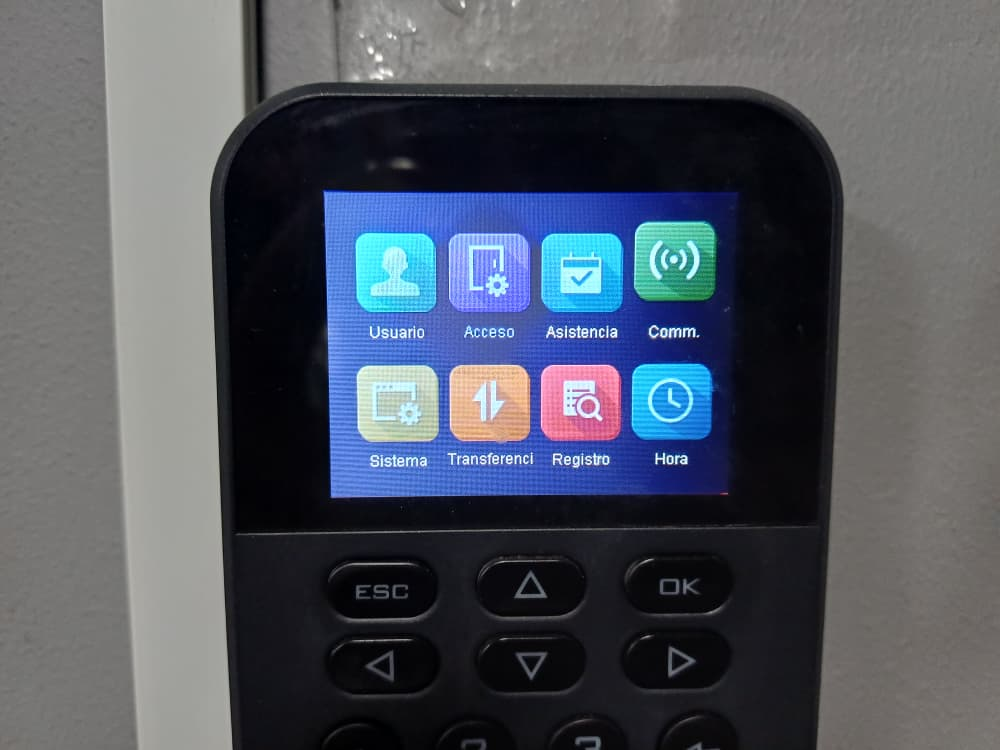
Una vez ingresemos la clave para acceder al dispositivo, vamos a navegar con las flechas hasta el apartado de Comm y accedemos con el boton físico ok.

Una vez dentro del apartado Comm, vamos a ver distintas opciones. Seleccionamos la que dice Red
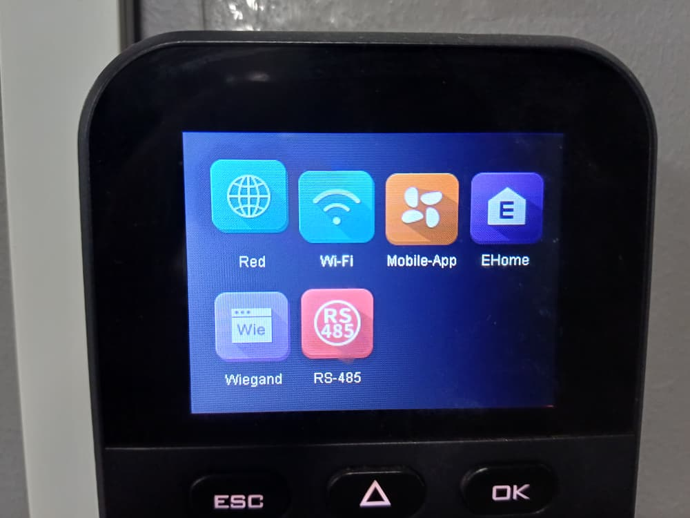
En esta pantalla vamos a ver los parámetros de red del equipo.
Para cambiar algunos de estos valores si es requerido, solo hay que navegar con las flechas de navegación e ir presionando el botón físico de ok según se requiera, y modificar los números a discreción.
Por lo general, el protocolo de asignación de IP es estático, si es requerido que sea por DHCP solo hay que darle ok al switch donde dice DHCP y activarlo.
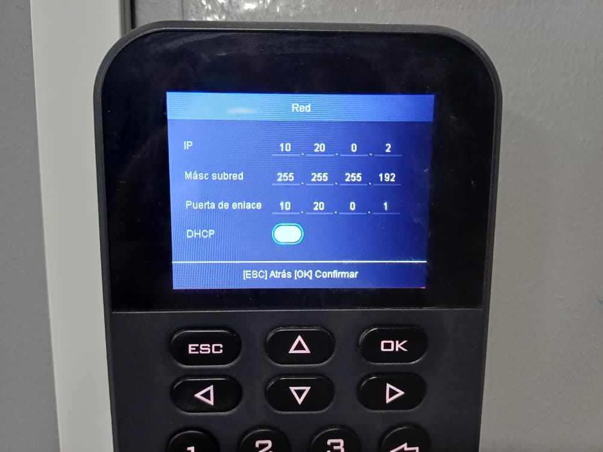
Navegamos con las flechas hasta el apartado de Sistema.
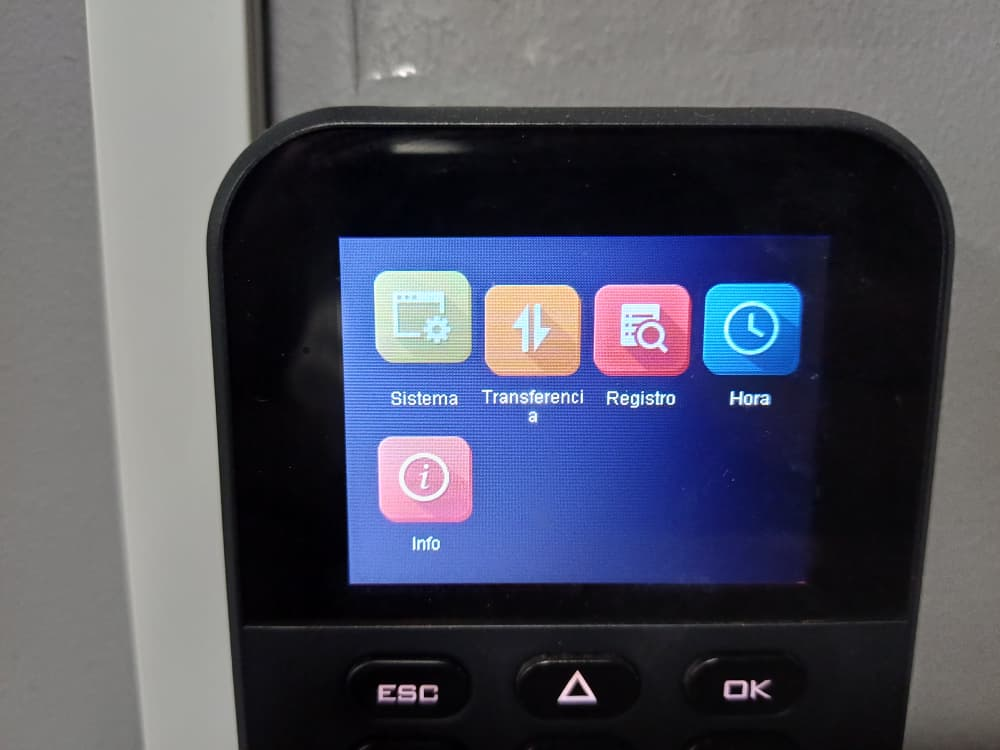
Una vez dentro de la opción Sistema veremos otra opción que dice Sistema.
La seleccionamos con el botón físico de ok.
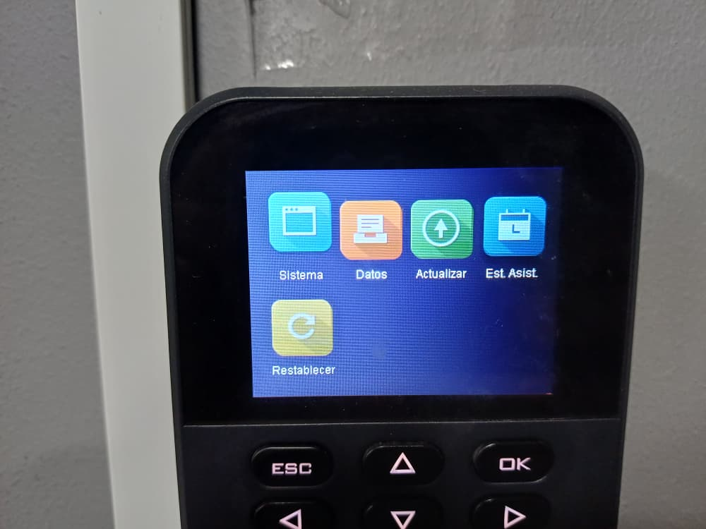
Una vez dentro veremos distintos apartados, para cambiar el formato de hora nos vamos donde dice Formato de hora y para alternar entre las distintas opciones disponibles solo tenemos que darle al botón ok.
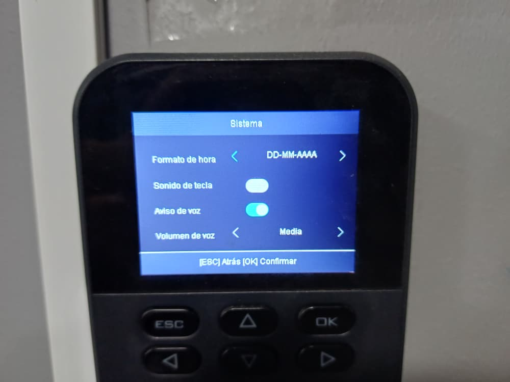
Con las flechas de navegación nos vamos al apartado que dice Hora.
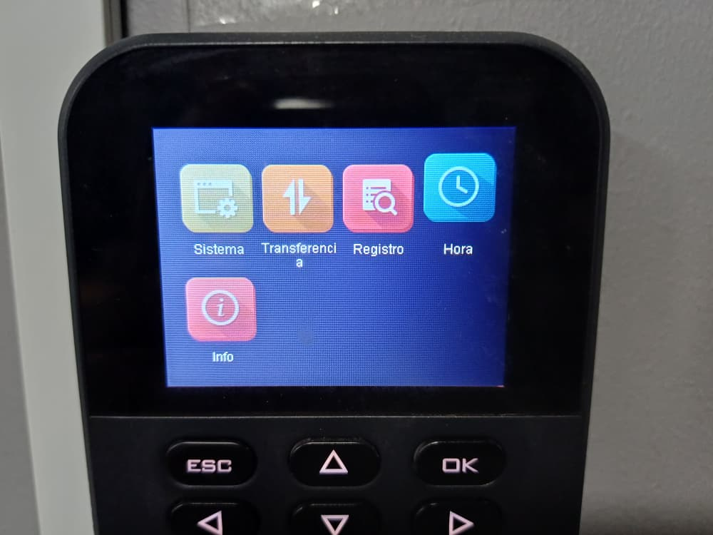
Una vez dentro de la opción Hora, veremos el apartado de Fecha y el apartado de Hora.
Para modificar alguno de los valores solo alternamos entre las opciones con las flechas y con el botón ok seleccionamos la que queremos modificar. Una vez modificado el valor volvemos a presionar ok para confirmar los cambios.
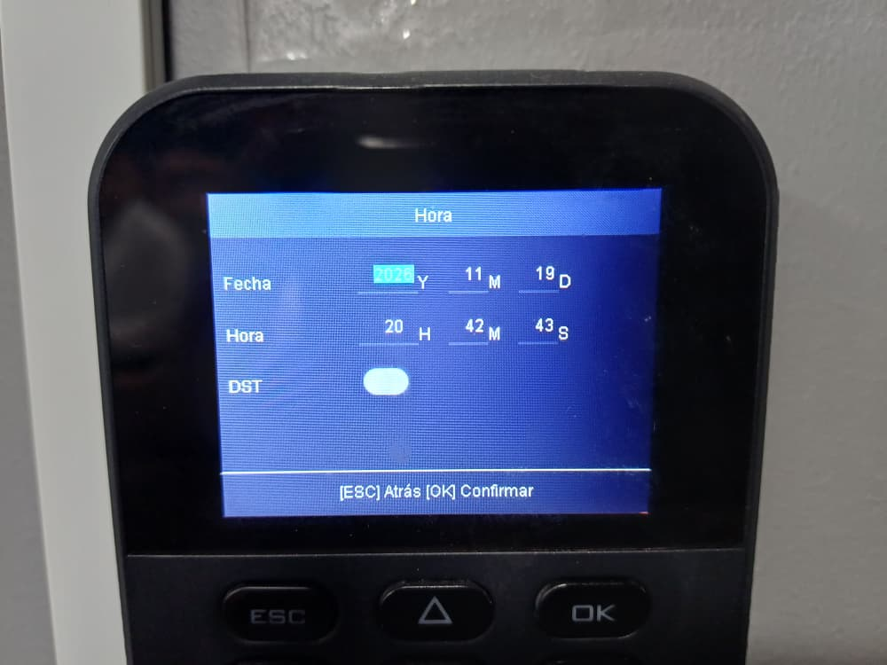
Navegamos hasta la opción con el nombre de Info.
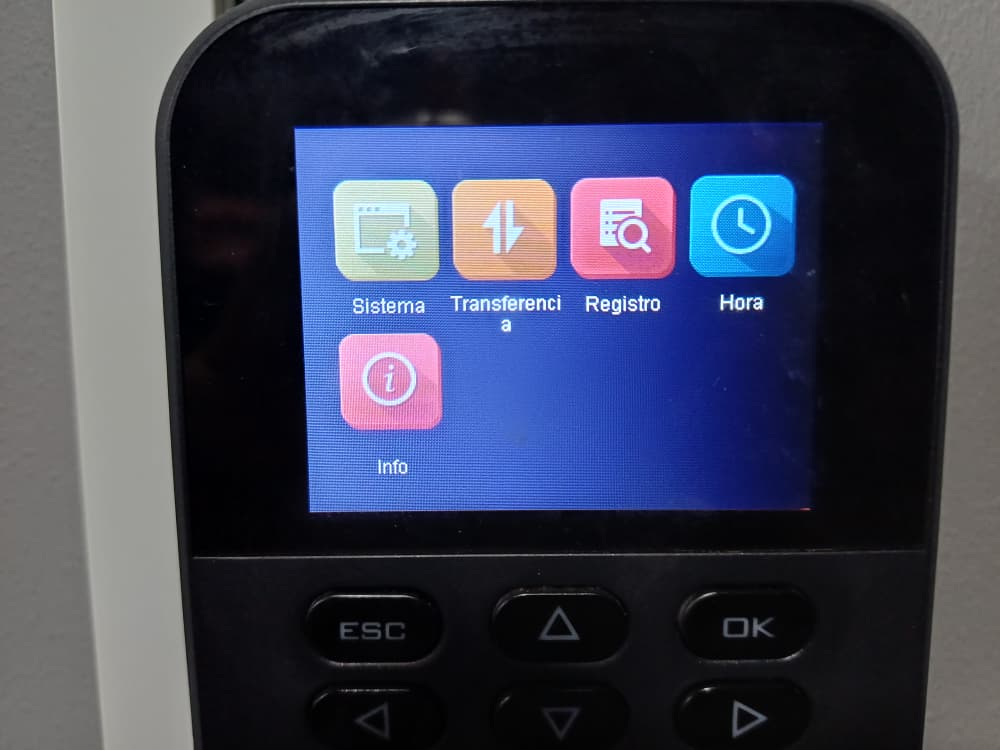
Una vez dentro de la opción Info, veremos 2 pestañas. Una para Capacidad y otra para información del Dispositivo.
En el apartado de Capacidad veremos en forma de gráfico de barras la cantidad de Usuarios, la cantidad de Huellas y de Tarjetas que tiene registrados el equipo así como su límite.
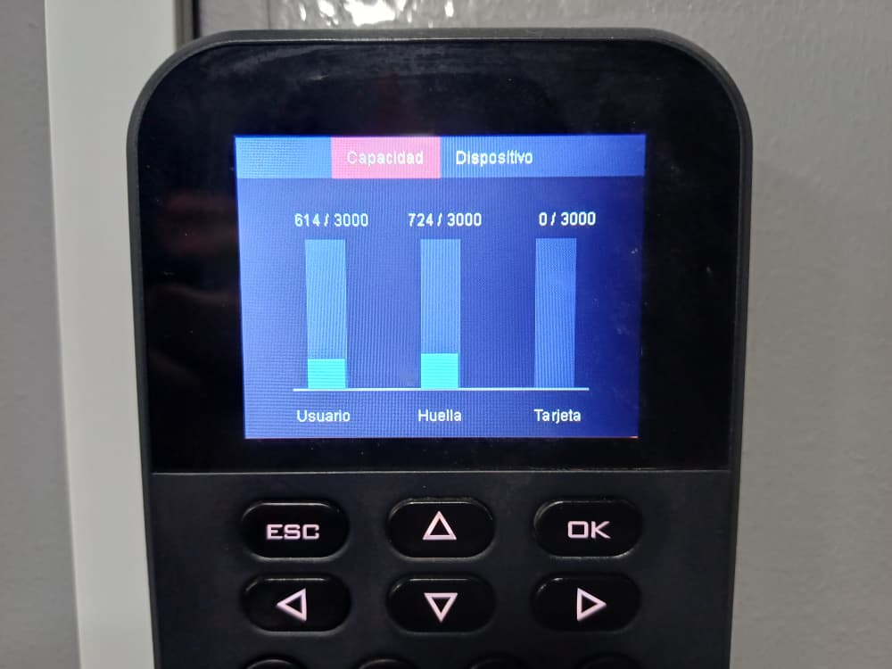
Para movernos hacia el apartado de Dispositivos utilizamos las flechas de navegación.
En esta vista apreciaremos datos técnicos del biométrico, como su modelo, MAC, serial, version de firmware y la fecha de fabricación.
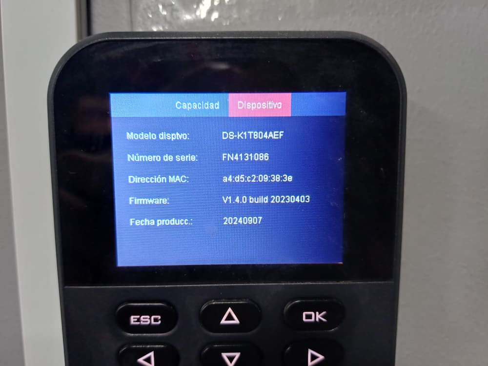